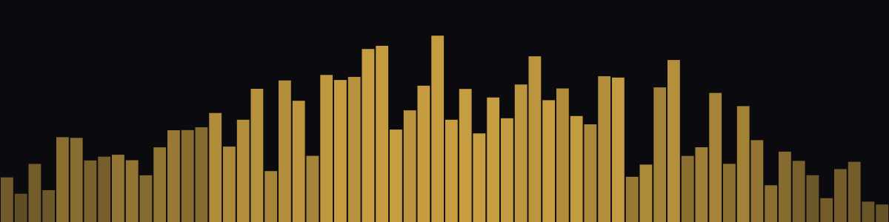

LOUD’N
LIVE
First principles
Chapter 01 / 05

Quote · Theory
What is a frequency?
Cycles
per
second.
Hilaritas is not a side effect of good teaching —
it IS the teaching.
After Spinoza · Hilaritas Generator